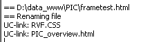
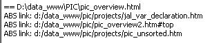

september, 2005
Website verification
Introduction
This function can check and correct a complete website. The website is assumed to start in the directory of the current document, and checks this directory and all it's subdirectories.

After selecting the actions to be performed, pressing the GO-button will execute all tasks.
ToDo list
Change local files+links to lowercase
Because on Unix machines (most webservers) lowercase and uppercase are assumed different, it's essential that the case of links is correct. Testing the website locally on a windows machine, won't reveal these errors. So here you get the possibility to standarize on lowercase.
First of all, the directory and subdirectories are scanned for uppercase and if such paths are found, they are translated to lowercase.
In windows-XP, although it works, shows a strange behaviour: The path will showup in windows explorer with some uppercase characters. But don't worry, it works !!
After the (sub-)directories are all changed to lowercase, all the filenames are changed to lowercase.
Then all html-files are scanned for "local" links, and if they contain links with uppercase characters, they are converted to lowercase.

Change local tags+links to lowercase
not implemented yet
Change local files+links from "htm" to "html"

Change absolute links to relative

Report local broken links
Reports internal broken links. An internal link is assumed broken, if it's either an absolute link or if the file doesn't exist. This action doensn't perform a case check !!
If the action "convert absolute links to relative" is already done, the action "report broken links" will not detect the absolute addresses (unless the file doesn't exist), because they are all fixed.

Below the same scan as above, but now "convert absolute" was also on.
In this case the "ABS" broken links will be missing (because they are already fixed).

By double-clicking a broken link, the editor will open at the position of the broken link, so you can correct it.
Report external broken links
not implemented yet.
This might be a problem nowadays, because when a link get's broken, most webservers show some kind of ad-page for their own services.
Report empty files
Some uploaders, like SSH, have problems (hangs) when they try to upload an empty file.
Why do empty files exist in the first place ??
Report only
In this mode the selected actions are executedperformed, but not stored on disk.